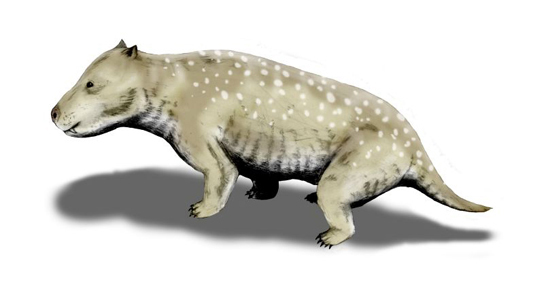

四、哺乳动物的起源和进化
哺乳类起源于古代似哺乳类的爬行动物，时间大约在距今2.25亿年前的中生代三叠纪。其直接祖先是合颞窝类（颌颞窝类）中的兽孔类→兽齿类（犬齿兽类）。三叠纪晚期出现最早的哺乳动物，随后在新生代辐射演化出三亚纲。哺乳类的进化与爬行类、鸟类一样，都是辐射式进化。
（一）起源的祖先类群：合颞窝类
爬行类按颞窝类型可分为几大类，哺乳类的祖先属于其中的合颞窝类（颌颞窝类，又称下孔类）。合颞窝类的头骨具单一的侧颞窝，其后孔在演化中逐渐封闭，最终形成哺乳类的合颞窝型头骨。
哺乳类的演化主线为：
古代爬行类（杯龙类） → 颌颞窝类（合颞窝类） → 盘龙类 → 兽孔类 → 兽齿类（犬齿兽类） → 古兽类 → 三亚纲（原兽/后兽/真兽）。
作为对比，其他爬行类演化支系如下（同源于杯龙类）：
- 无颞窝类 → 现代龟鳖类
- 双颞窝类 → 有鳞类（蛇、蜥蜴，喙头目）；初龙类（鳄目、恐龙）；兽脚类 → 始祖鸟 → 现代鸟；槽齿类 → 蛇颈龙类（已灭绝）
- 颌颞窝类（合颞窝类） → 盘龙类 → 兽孔类 → 兽齿类 → 古兽类 → 三亚纲
可见，鸟类起源于双颞窝类的初龙类（兽脚类→始祖鸟），而哺乳类起源于合颞窝类（颌颞窝类）——二者祖先不同，这是联赛常考的"起源对比"点。
（二）关键过渡类群：犬齿兽类
犬齿兽类（兽齿类）是连接爬行类与哺乳类的关键过渡类群，兼具两类特征，化石证据完整。其向哺乳类过渡的标志性变化包括：
- 颞窝：由双颞窝向合颞窝演变（后孔逐渐封闭）
- 下颌：由多块骨组成向单一齿骨演变，原本参与颌关节的方骨、关节骨缩小
- 颌关节：由爬行类的"方骨-关节骨"关节，演变为哺乳类的"齿骨-鳞骨"关节
- 枕髁：由单枕髁向双枕髁演变
- 牙齿：由同型齿向异型齿分化，出现齿尖分化
- 次生腭：逐渐发育完整

（三）听小骨的演化——颌骨变听骨
听小骨的演化是爬行类向哺乳类过渡中最经典的演化事件，也是联赛高频考点。爬行类参与颌关节的骨骼，在哺乳类中"退入"中耳，演化为3块听小骨：
- 方骨 → 砧骨
- 关节骨 → 锤骨
- 舌颌骨 → 镫骨
注意：镫骨在爬行类中已由舌颌骨形成并作为唯一耳骨存在；哺乳类新增的砧骨、锤骨分别由方骨、关节骨退化后移入中耳构成，从而使中耳听小骨由1块增至3块。
这一转变伴随下颌由多块骨简化为单一齿骨：原本爬行类的"方骨-关节骨"颌关节被"齿骨-鳞骨"颌关节取代，腾出的方骨、关节骨变小并移入中耳，与原有的镫骨（源自舌颌骨）共同构成锤骨-砧骨-镫骨的听小骨杠杆系统，使听觉敏锐化，并使咀嚼与呼吸可同时进行。

（四）从爬行类到哺乳类的关键特征演变
| 特征 | 爬行类（祖先态） | 哺乳类（演化态） |
|---|---|---|
| 颞窝类型 | 双颞窝（或合颞窝类祖先的双孔） | 合颞窝（后孔封闭） |
| 枕髁 | 单枕髁 | 双枕髁 |
| 下颌 | 多块骨组成 | 单一齿骨 |
| 颌关节 | 方骨-关节骨 | 齿骨-鳞骨 |
| 听小骨 | 1块（镫骨，源自舌颌骨） | 3块（砧骨+锤骨+镫骨） |
| 牙齿 | 同型齿、多出齿 | 异型齿、再生齿、槽生齿 |
| 次生腭 | 不完整或无 | 完整次生腭+软腭 |
| 体动脉弓 | 双体动脉弓 | 仅左体动脉弓 |
| 生殖方式 | 卵生 | 胎生（单孔类除外）+哺乳 |
| 体温 | 变温 | 恒温 |
| 体表 | 角质鳞片 | 毛（与鳞、羽同源） |
上表呈现了从爬行类到哺乳类的"全景式"特征演变。其中颞窝、枕髁、下颌、颌关节、听小骨、牙齿六项是骨骼层面最核心的过渡证据，胎生哺乳、恒温、毛、左体动脉弓则是生理层面的高级特征。
（五）三亚纲的演化与辐射
由古兽类出发，哺乳类在三叠纪晚期至新生代经历了辐射式进化，形成三个亚纲：
- 原兽亚纲（单孔类）：最古老，起源1.3亿多年前，保留卵生等爬行类特征，现仅存鸭嘴兽、针鼹，分布于澳洲。
- 后兽亚纲（有袋类）：假胎生、育儿袋，270多种，主要分布于澳洲。在中生代曾广泛分布，后被真兽类竞争淘汰，仅澳洲等隔离区保留。
- 真兽亚纲（有胎盘类）：最早出现于7000万年前白垩纪蒙古地区，新生代辐射出19个目、4000多种，全球分布，成为哺乳纲主体。
新生代真兽类雨后春笋般出现，许多较低等有袋类和单孔类随之被淘汰——这是竞争排斥与地理隔离共同作用的结果（澳洲因隔离保留了有袋类）。
辐射式进化：哺乳类的进化与爬行类、鸟类一样，都是辐射式的——由共同的原始食虫类祖先，沿不同生态方向（飞行、水栖、奔跑、挖掘、树栖等）辐射演化出形态各异的类群。这解释了为何鲸（水栖）、蝙蝠（飞行）、马（奔跑）、穿山甲（挖掘）同属哺乳类却形态迥异。
★ 哺乳动物起源与进化总结（必背）
起源时间：距今2.25亿年前，中生代三叠纪晚期。祖先：古代似哺乳类爬行动物——合颞窝类（颌颞窝类）的兽孔类→兽齿类（犬齿兽类）→古兽类。
演化主线：杯龙类 → 颌颞窝类 → 盘龙类 → 兽孔类 → 兽齿类（犬齿兽类）→ 古兽类 → 原兽/后兽/真兽三亚纲。
听小骨演化（必考）：方骨→砧骨，关节骨→锤骨，舌颌骨→镫骨；颌关节由"方骨-关节骨"变为"齿骨-鳞骨"。
关键过渡特征：双颞窝→合颞窝、单枕髁→双枕髁、多骨下颌→单一齿骨、同型齿→异型齿、双体动脉弓→左体动脉弓、卵生→胎生哺乳、变温→恒温。
辐射进化：哺乳类与爬行类、鸟类同为辐射式进化；真兽类7000万年前白垩纪蒙古起源，新生代辐射出19目，成为哺乳纲主体。